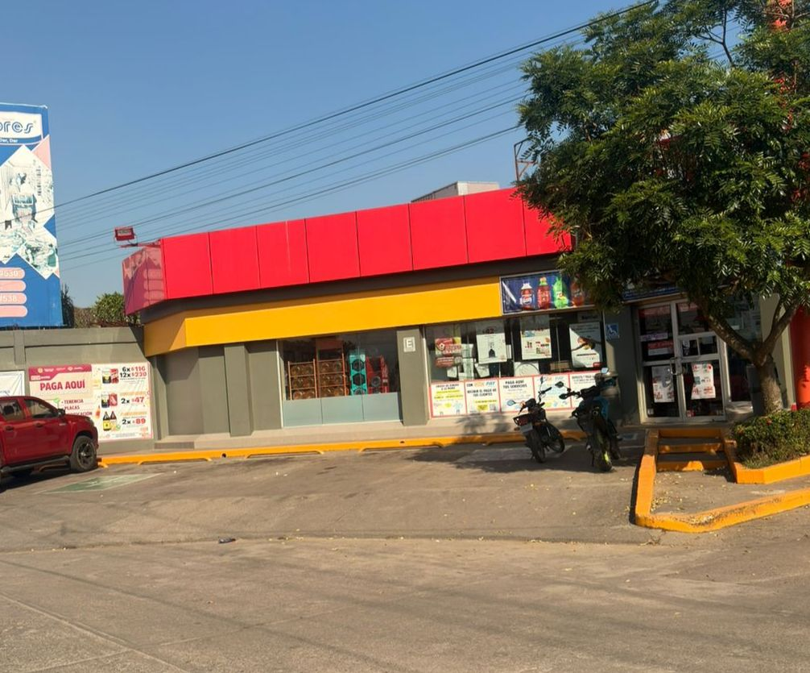
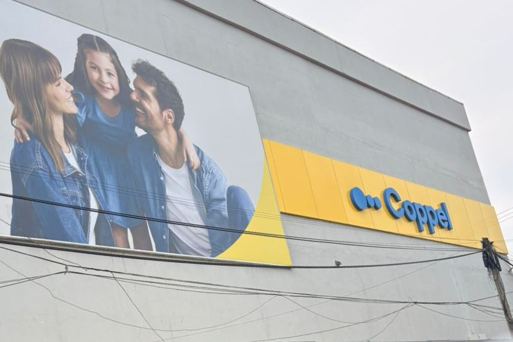
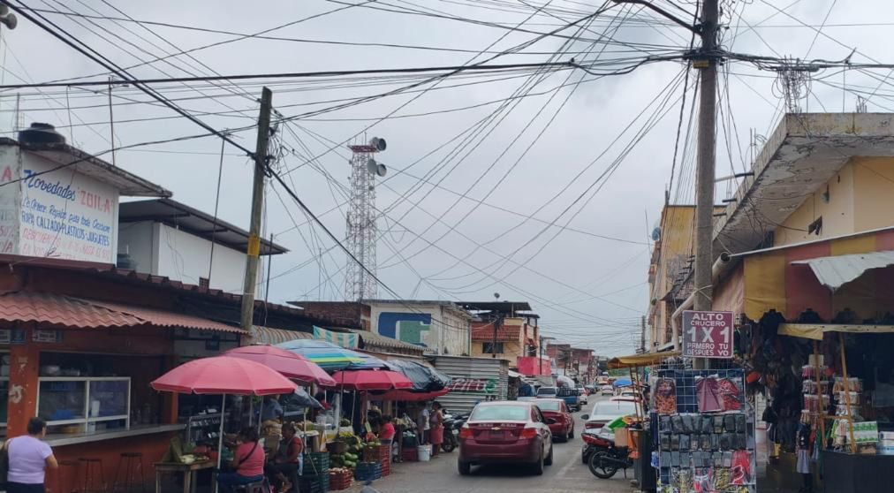

Cultivo de caña
El cultivo de caña es el principal elemento para la producción de azucar, ya que primero hacen la siembra de la caña, la queman y entran los cortadores de caña a hacer su labor y hacen los bultos de caña y entra una maquina que los pone en una carreta que los transportan al inegnio para procesarla.
Ingenio Tres Valles
El Ingenio azucarero es una de las principales fuentes de trabajo y de la economía de Tres Valles, ya que procesa la caña y produce azúcar para su distribución y es una de las grandes empresas del sector azucarero.

Bio Papel
La empresa de Bio Papel representa una actividad industrial importante que contribuye al desarrollo económico de Tres Valles ya que produce papel, libretas, hojas recicladas y reutiliza el papel.

Oxxo
En los diversos oxxos que exiten en el municipio de tres valles puedes encontrar casi todo en esas tienda ya que cuenta para pagar servicios de luz, cable, agua, y puedes realizar transferencias bancarias, hacer depositos, tambíen cuenta con la despensa, con comida chatarra, y bedidas de todo tipo y cuando son bebidas para mayores de edad, solicitan la INE .

Modelorama
En Tres Valles existen diversos modeloramas que son casi iguales a las de oxxo, cuenta para hacer recargas de telefono, pagar servicios, cuenta con menos despensa, cuenta con comida chatarra, dulces y bebidas y tambien cuando son bebidas alcoholicas piden la INE.

Lores
En Tres Valles existen aparte de Oxxos y Modeloramas también estan las tiendas de Lores y cuentan con mas cosas relacionadas a la despensa, comida, comida chatarra, dulces, productos de limpieza, verduras y frutas, y se pueden realizar pagos con efectivo y con tarjeta al igual a las antes mencionadas, lores es conocido por tener precios accesibles
Bodega Aurrera
Tres Valles cuenta con una sucursal de Bodega Aurrerá, donde es como Lores, pero Bodega Aurrera cuenta con sus propios productos de despensa, de cocina, de comida, de bebidas y es conocida por ser la campeona de los precios bajos.

Coppel
Coppel es una tienda en la cual vende productos domesticos, ropa, accesorios. bolsos, tenís, celulares, y muchas cosas mas y aparte de eso cuenta con su propia línea de credito, ademas que cuenta con su propio banco (BanCoppel) y tiene su línea de debito y de afore.

Mercado
El Mercado de Tres valles es el corazón del municipio ya que la compra y venta de alimentos y productos por que impulsa el comercio local a que cuenta con comida rapida, antojitos, tamales, servicios de telefonía, tienda de ropa, taquerias, casas de empeño y muchas cosas más y a precios accesibles.

Bubble drinks
La empresa de Bubble Drink es un local donde venden frappes y bedidas refrescantes, el local es conocido por hacer sus deliciosos prodcutós que ofrece y además cuenta con su servicio a domicilio.

Fuentes de información
- Investigaciónes de fuentes de internet Grupo piasa
PAPELERA ESCRIBE
Hayuntamiento Tres Valles
Mercado Tres Valles
Bubble Drinks
Bodega Aurerra
Oxxo
Modelorama
Lores
Mercado Tres Valles